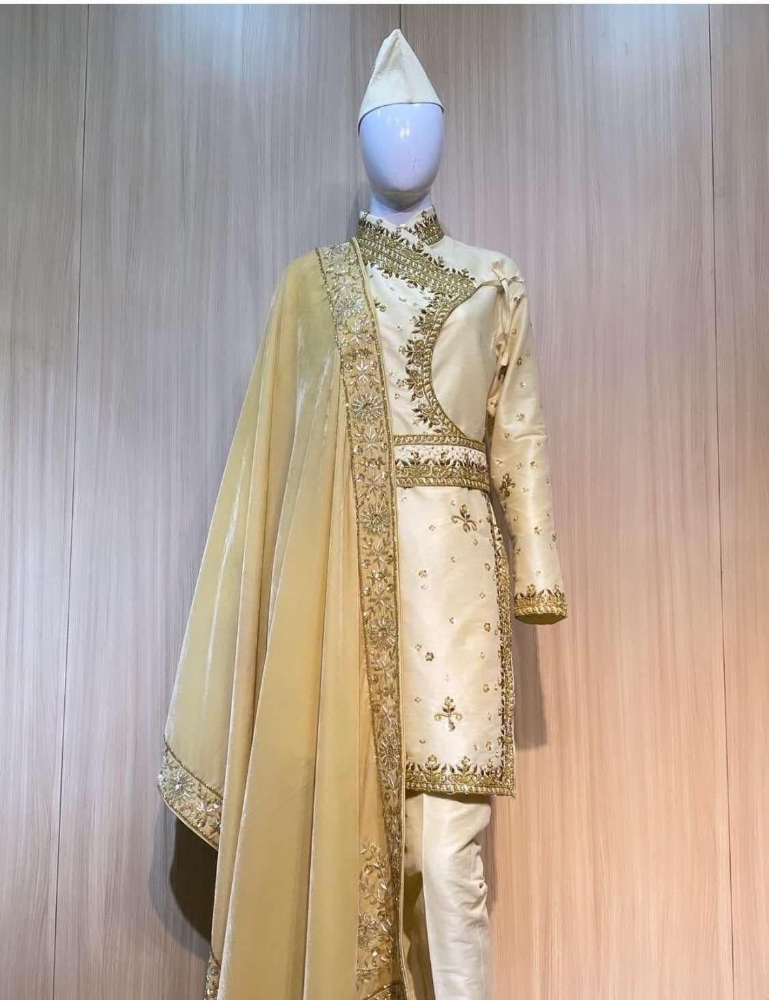
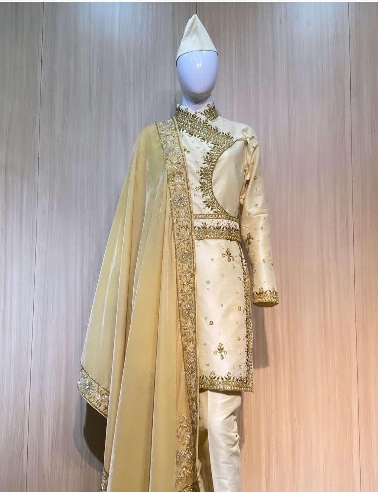
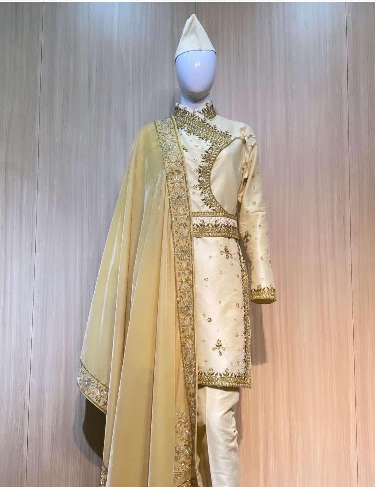

The Daura Suruwal traces its roots back to the Malla Dynasty in the Kathmandu Valley. Initially worn by the ruling class, it symbolized power and authority. Over time, it evolved into the national dress of Nepal, reflecting the country's rich cultural heritage. Its distinctive design and comfortable fit have made it a beloved garment worn on formal occasions and celebrations.
